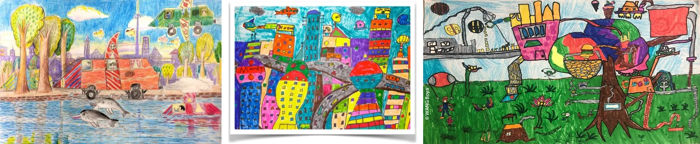

Looking back & Project
Lesson 8 — The ideal city of the future
3Four stops in 45 minutes
- 🍀
Lucky number
Warm-up
5 min - 🔁
Looking back
Sounds · words · grammar
12 min - 🏙️
Project
Poster presentations
25 min - ✅
Wrap-up
Now I can…
3 min
Warm-up
Lucky number
5 minutesChoose a number!
- 🍀
Lucky number
1 point — no question!
- 🗣️
Other numbers
One student describes or acts out the word — don’t say it!
- 🏆
Guess it
Correct guess = 1 point.
Looking back
Pronunciation · vocabulary · grammar
12 minutesThen practise saying the sentences
1. Many young people want to live in the city. live‿in
2. It’s a busy street with great shops and restaurants. It’s‿a · shops‿and
Then practise saying the sentences
3. The government wants to build a smart city in the south of the country. build‿a · south‿of
4. The apartment was expensive, but my parents could afford it. was‿expensive · could‿afford‿it
Words you have learnt in this unit
1. The project aims to improve the city’s old i______ by creating more pedestrian zones and cycle paths. infrastructure
2. My city was ranked as the most l______ city in the country thanks to its excellent facilities and clean air. liveable
Words you have learnt in this unit
3. Cities in the future will have a lower carbon footprint and will be more s______. sustainable
4. Smart technologies have made lives of c______ d______ more convenient. city dwellers
Stative verbs · linking verbs
1. Please don’t talk. I think / am thinking. am thinking
2. People living in crowded cities feel unhappily / unhappy. unhappy
3. You should try this soup. It tastes / is tasting delicious. tastes
4. James seems an intelligent person / intelligently, but he sometimes asks silly questions. an intelligent person
Project
The ideal city of the future
25 minutesThe ideal city of the future

Posters by students around the world — be creative!
Present your poster
📍 Where will it be located?
👥 How big will it be? How many people will live in it?
🚆 How will people travel?
🏢 What kind of buildings will people live in?
🤖 Will people use AI technologies? If yes, how will they be used?
Listen, evaluate and vote
- 🎤
Presenters
Answer the five cues. Use words from the unit.
- 📝
Audience
Complete the evaluation sheet. Ask one question.
- 🏆
Vote
The most creative city · the best presentation.
Tick ✓, ✓✓ or ✓✓✓
- link consonants to vowels
- city and smart-living words
- stative & linking verbs
- read about future cities
- keep a conversation going
- listen to an interview
- write an article
- express certainty
- smart cities around the world
- present a poster
Homework
1. Do the Looking back exercises in the workbook.
2. Improve your poster with your classmates’ feedback.
3. Get ready for Unit 4 — ASEAN and Viet Nam.